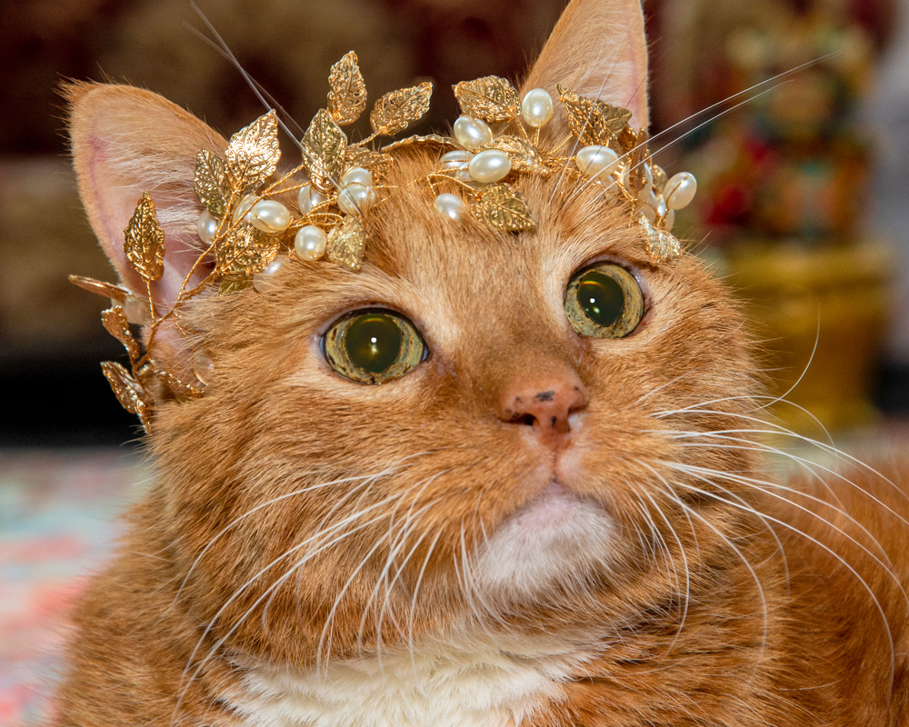

The UOC Observer
H'Online Since 2024 Fwend

Shocking Scenes h’in the Legione today!
It began with Post Chance.
The clouds sagged heavy with drizzle. Somewhere, a pigeon sneezed. The world was still.
Then—click click clack.
Post Chance. On his route. On his mission. One paw after another,
satchel at his side, gaze fixed on the horizon. He had just
hand-delivered a “Congrats On Ya First Blarbasloppa” card to
Behbej 83 and was humming his delivery tune.
He was content.
Then the bushes rustled.
Three shapes emerged.
“You’re in violation of parcel law,” hissed the lead Kitteh.
“You ain’t got a scanner,” sneered Evri.
“That’s our sack,” snapped Prime, twitching.
Post Chance didn’t flinch.
“You want the sack?”
They stepped forward.
“Then come and take it.”
He unhooked the strap. Shifted his weight. Closed his eyes.
And entered the Pawxil state.
An ancient art. A martial discipline. A courier’s fury.
Invented by the monks of Mjassivetop.
Refined by the H’Elder Hannibal.
Perfected by Post Chance.
He moved.
The bag became a blur. A spinning, bludgeoning comet of rolled-up gas bills and weaponised leaflets.
A Kitteh was decked by a Tesco Clubcard reminder.
Evri tripped on a “Do Not Bend.”
Prime caught a rolled-up Argos catalogue straight in
the gullet and keeled over backwards screaming “I NEED A RETURN
LABEL!”
Post Chance stood alone.
The satchel was sealed.
The post… delivered.
H’Allen lay in bed. Bald. Pale. Shirt stretched tight. Duct tape still clung to his ankle like a badge of failure.
His eyes didn’t blink.
Around him, the Legionnaires whispered.
“He shoulda worn the foil.”
“Didn’t his wife leave him?”
“Wasn’t her name… Steve?”
“Steve was the wife?”
“I think so. Or the boiler.”
The door slammed.
Post Chance entered.
Covered in scratches. Bag singed. One sock missing.
Everyone fell silent.
He began his rounds. Calm. Mechanical. Focused.
He handed out leaflets. Slapped a “Missed Parcel” on a chair that looked suspicious.
He stopped beside H’Allen’s bed.
Paused.
And, wordlessly, handed him a letter.
No one moved. H’Allen never got post.
H’Allen blinked. Took it. Tore it open.
A long pause.
“What is it?” asked Nigel.
“Bills,” said H’Allen quickly. “Just bills.”
From H’Allen’s shoulder, a Behbej leaned in and nodded sagely.
“…I can’t read. I’M COOL.”
Post Chance narrowed his eyes.
That letter didn’t have RCT branding.
But he turned away. Not his circus. Not his monkeys.
Across UOC, Sergeant and the Hippies were hustling.
They tried the Strategy Board.
“We’ve got instincts!” said Sergeant. “Terry’s drawn up maps!”
They tried the Behaviour Committee.
“He’s stopped biting people!” argued a Hippie.
“No he hasn’t,” said Hon. “He just bites slower now.”
They even went to the Booking Committee—a shadowy cluster of wrestlers with clipboards.
“You’re too unpredictable,” growled the Chairman. “You’re not in the script.”
Sergeant slumped. “But we want to help.”
No one wanted them.
In the hedge, they gathered.
Sergeant looked at Terry.
“I don’t like you,” he said. “You’re a pinecone. But you’re all I’ve got.”
Terry didn’t blink.
“I think they’re afraid of us,” murmured a Hippie. “Afraid we’ll do… something real.”
Sergeant stared at the sky.
“This ain’t over,” he whispered. “You hear me, Terry? We’re not done yet.”
Then came Shimmerwhisker.
He strolled through the UOC gates under a flag of truce—tail like silk, boots polished, cloak shimmering with thread-of-sardine. His eyes were half-lidded. His smirk, devastating.
He said nothing at first.
He simply opened a case.
And revealed:
He purred:
“You don’t have to live like this.”
The crack was immediate.
Nigel touched a sash. Looked at his reflection in a puddle. “...I look amazing.”
Gok fell to his knees. “VELVET. VELVET WITH TRIM.”
The Sisters gasped. “They have names embroidered. WE COULD MATCH.”
One by one, the Legione began to slip away.
Three Behbejs chased a laser pointer right out of the gates and didn’t stop.
Others followed in slow shame.
Lookout Chance left his bell behind.
Biscuit Clerk Chance turned in his clipboard and wept.
Even Bad News Chance stepped forward.
“I’m afwaid… I’ve got some bad news…”
All eyes turned.
“UOC… h’is… h’over.”
He followed Shimmerwhisker out.
Even Sheamus lingered by the gate.
He looked back once.
Then shook his head.
“A cat’s gotta h’eat, lads.”
And was gone.
The gates stayed open.
Shimmerwhisker raised one paw.
The Kittehs bowed.
The defectors were welcomed like royalty.
There was no violence. No threat.
Just… choice.
The Empire didn’t conquer UOC.
UOC surrendered to luxury.
And somewhere, deep in the hedge, beneath the silence and smoke…
Terry the Pinecone caught a sunbeam.
And tilted.